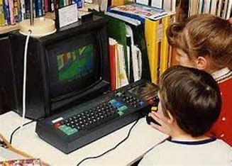
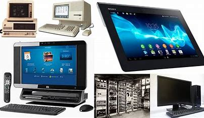
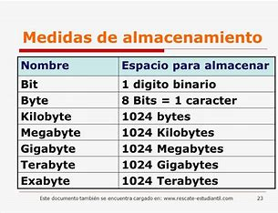
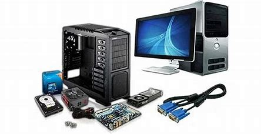
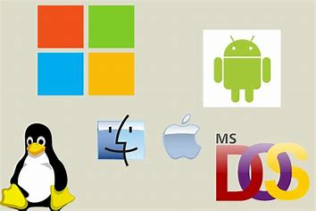
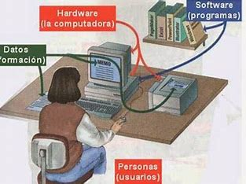
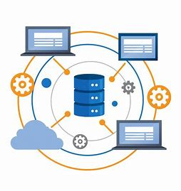

Introducción a los sistemas de cómputo
Historia de las computadoras
La historia de las computadoras es la narrativa que abarca el desarrollo y la evolución de las máquinas de cálculo y procesamiento de información a lo largo del tiempo. Esta historia se remonta a miles de años atrás, con el uso de herramientas primitivas para contar y calcular, y ha evolucionado hasta llegar a los modernos dispositivos informáticos que utilizamos en la actualidad.
Ver más...

Introducción a los sistemas de cómputo
Conceptos básicos de las computadoras
Los conceptos básicos de las computadoras son los fundamentos y principios que debes comprender para entender su funcionamiento y utilizarlas de manera efectiva.
Ver más...

Introducción a los sistemas de cómputo
Medidas de almacenamiento
Las medidas de almacenamiento se utilizan para cuantificar la capacidad de almacenamiento de datos en dispositivos de almacenamiento, como discos duros, unidades flash USB, tarjetas de memoria, entre otros. Estas medidas se refieren a la cantidad de información que se puede almacenar en un dispositivo y se expresan en diferentes unidades de medida.
Ver más...

Introducción a los sistemas de cómputo
Arquitectura de las computadoras
La arquitectura de las computadoras se refiere al diseño y organización de los componentes físicos y lógicos que componen un sistema informático. Esta arquitectura establece cómo los diferentes elementos de hardware y software interactúan entre sí para realizar tareas de procesamiento de datos.
Ver más...

Introducción a los sistemas de cómputo
Sistemas operativos ¿Qué son?
Los sistemas operativos son programas de software que actúan como intermediarios entre los usuarios y el hardware de una computadora. Son un conjunto de software esencial que administra los recursos de hardware, coordina las actividades de los programas y proporciona una interfaz para que los usuarios interactúen con la computadora.
Ver más...

Introducción a los sistemas de cómputo
Recursos administrados por el S.O
Los sistemas operativos administran diversos recursos de hardware y software en una computadora. Estos recursos son gestionados y controlados por el sistema operativo para garantizar un uso eficiente y coordinado.
Ver más...

Introducción a los sistemas de cómputo
Bases de datos, XAMP y MySQL
Las bases de datos son sistemas organizados y estructurados que permiten almacenar, administrar y recuperar grandes cantidades de información de manera eficiente. Una base de datos consiste en un conjunto de datos relacionados entre sí, organizados en tablas o estructuras similares, que se pueden acceder y manipular mediante consultas y operaciones específicas.
Ver más...
.jpeg)
Introducción a los sistemas de cómputo
Introducción al desarrollo web
El desarrollo web se refiere al proceso de crear y construir sitios web y aplicaciones web que son accesibles a través de Internet. Implica diversas tareas, como el diseño de la interfaz de usuario, la escritura de código, la configuración de servidores, la administración de bases de datos y la implementación de funcionalidades interactivas.
Ver más...
Introducción a los sistemas de cómputo
Redes y comunicación de datos
Las redes y la comunicación de datos se refieren al conjunto de tecnologías, protocolos y sistemas utilizados para la transmisión y el intercambio de información entre dispositivos y sistemas informáticos. Estas redes permiten la comunicación y el intercambio de datos entre computadoras, servidores, dispositivos móviles y otros dispositivos conectados.
Ver más...